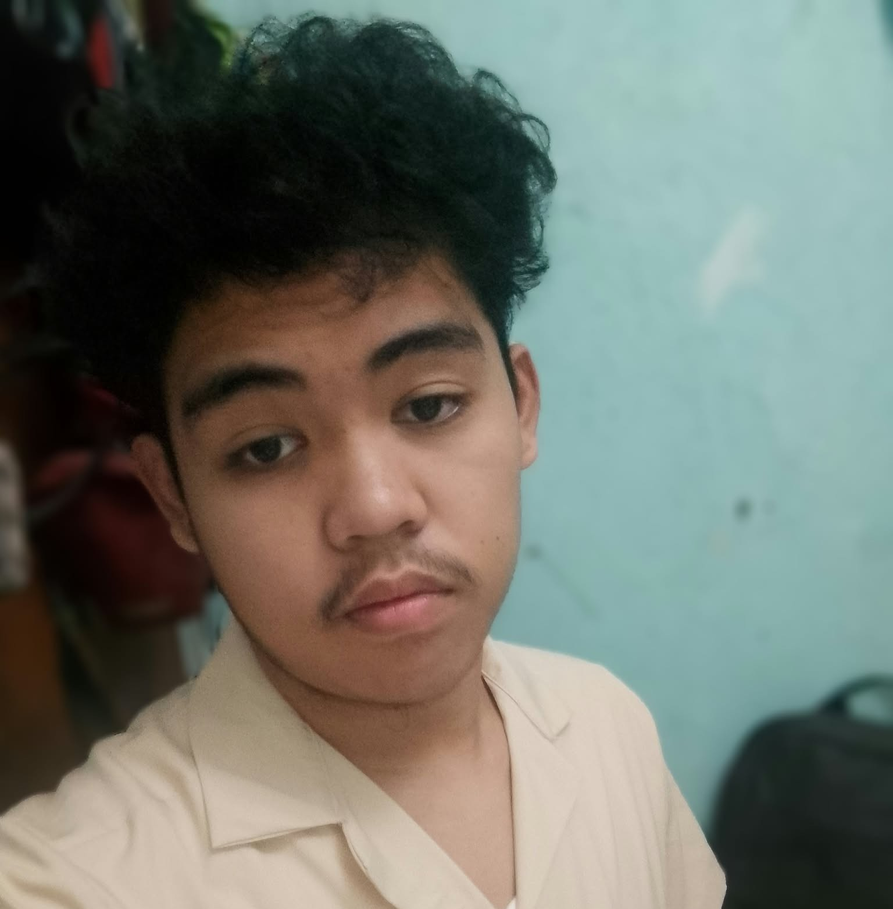

I am currently a second-year Information Technology student at Cavite State University. As a student, I am always willing to learn new things and explore different areas of technology. I want to continuously improve my knowledge and enhance my skills, especially in programming and mathematics, because I believe these are important foundations in the field of technology.
hello
My dream is to become a game developer someday. I am curious about how games work, how they are created, and how coding brings different game features to life. This curiosity motivates me to learn more, practice my skills, and challenge myself to become better. I hope to use the knowledge and experience I gain throughout my studies to turn my passion for technology into a successful career in game development.